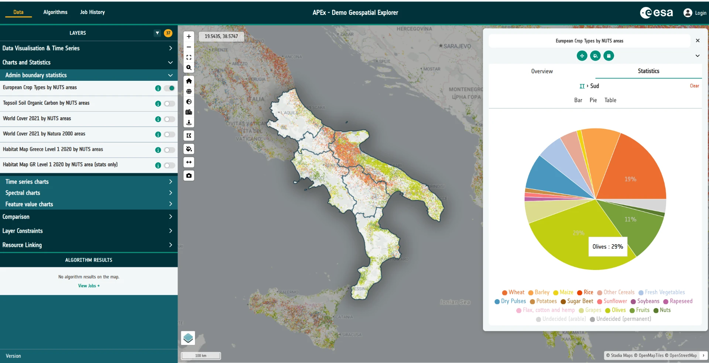

1-2. Geospatial Explorer¶
The APEx Geospatial Explorer is an interactive web map dashboard for exploring Earth Observation (EO) data and derived products. It brings together cloud-native geospatial data, SpatioTemporal Asset Catalogs (STAC), on-the-fly algorithm execution and rich visualisation tools — all in a no-code environment that end users can drive from a browser.
Every Explorer deployment is shaped by a configuration — a JSON document that defines the layers, services, styling, charts, filters and storymaps on offer. In later tutorials you'll build one of these configurations yourself. For now, the goal is simply to get a feel for what the end-user application looks like and what it can do.

Tasks¶
1. Open the reference deployment¶
Open the demonstration version of APEx Geospatial Explorer ("GE") in a new browser tab:
Geospatial Explorer Demonstrator
This particular deployment has been organised around the core areas of functionality the Explorer supports — data visualisation, time series, charts and statistics, constraints and filters, storymaps, and algorithm execution.
As you will learn through the workshops, the user interface of the GE is very configurable. Usually the user interface will be organised around different "thematic areas" according to what the deployment aims to show.
2. Have a play¶
Spend some time exploring the application. There is no wrong way to do this — click things, toggle layers on and off, open panels, drag the time slider, try the charts. Some suggestions:
- Switch between different interface groups using the top-level navigation.
- Toggle layers on and off and adjust their opacity.
- Open a layer's data visualisation controls and experiment with colormaps or RGB composites.
- Try any time series layers — scrub the timeline and watch the map update.
- Open a storymap if one is available and step through it.
- Apply a constraint or filter and see how the map responds.
Don't worry about understanding every control yet — you'll meet them again in later tutorials.
3. Browse the Solutions Gallery¶
The APEx project has also created a showcase of various project implementations - not just of the GE but other APEX tools too.
Head over to the APEx Solutions Gallery, filter on "Geospatial Explorer and have a play around with two or three examples that other teams have built. These give you an idea of the sort of configurations you will learn to produce via these workshops.
APEx Solutions Gallery
If you are wondering what the various acronyms are:
- SEF refers to the Stakeholder Engagement Facility - an ESA team focussed on outreach. Their configurations tend to be broad showcases around a general thematic area, such as energy, or biodivserity.
- EO4 (Earth Observation for ...) and EOBP (Earth Observation Best Practices) are both ESA programs within the EO 4 society (https://eo4society.esa.int/). These configurations have been used to showcase specific project outputs such as sample datasets and algorithms.